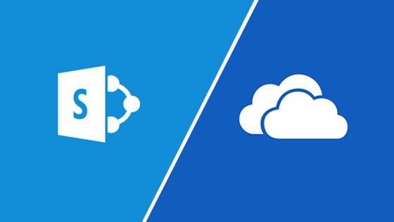

Tech Tips!
10 Popular Tech Tips

Everybody loves a cool trick. No matter how well we know an app or program, there’s almost always some shortcut we never learned. The same goes for hardware: We may use gadgets every day without knowing their helpful quirks. A great example is Zoom, which millions of Americans have recently discovered for the first time. Tap or click here for 11 of the best Zoom tricks you’ll wish you’d known sooner. In quarantine, you may spend a lot of time with the tech you already own, especially if you’re working from a home office. Little do you know, you may be doing things “the hard way,” when you could be cutting corners for free.
Read more...8 Easy Tech Tips You'll Use Everyday

Technology has become an important part of our lives. We all are surrounded by tech gadgets and advanced devices. Many employees are working remotely because of the coronavirus situation. while doing so can bring some challenges related to technology. Some people struggle a lot and spent their time doing it a long way, which can be done in an easier way to save their time. When it comes to technology, there are many shortcuts to do work in a short and easy way than a hard way. It doesn’t matter, how well you use or know the app or system. There are always some shortcuts or hacks which we never learned or get familiar with.
Read more...Syncing Files with Microsoft OneDrive and SharePoint
Although OneDrive can display your files and folders in Windows File Explorer as if it were a local resource, it is cloud-based by default. To sync folders between OneDrive and your local machine, follow these steps.
- In the Windows taskbar notification area, click the white or blue OneDrive cloud icon. (If you don’t see one of these, click the upward-facing caret symbol next to the notification area to enable Show Hidden Icons).
- From the menu that appears, click Help & Settings (look for the gear icon) then click Settings. On the resulting window, select the Account tab, and select Choose folders. In the Sync your OneDrive files to this PC dialog box, uncheck any folders you don't want to sync to your computer and select OK.